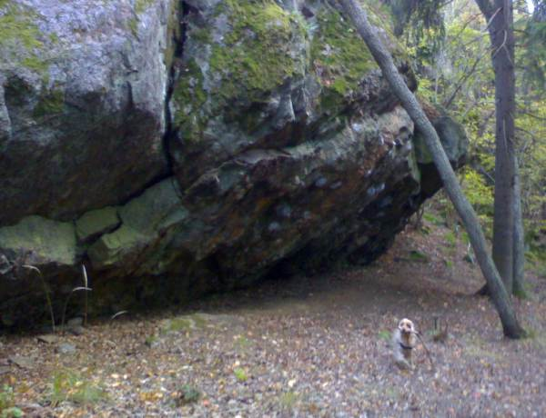
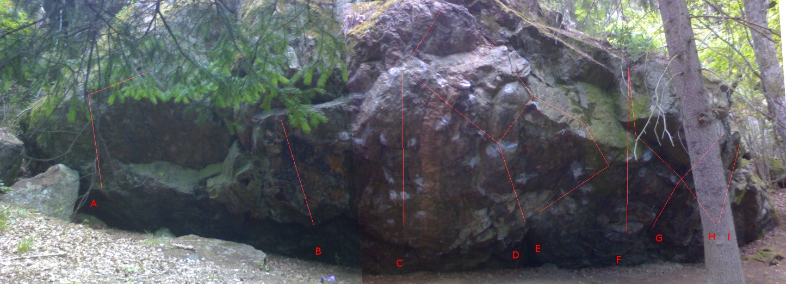

Skansberget
Lat: 59.221
Long: 17.88
Tullinge - skansberget ( the complete guide :)
Parkeringstips: Kör rakt fram istället för att svänga vänster in på skansbergsvägen. Då kommer man till en liten badparkering.
<googlemap width=350 height=300 lat="59.221" lon="17.88" zoom="11" type="map" controls="small">
59.221,17.88,här
</googlemap>


Klassiska boulders:
Samtliga klassiska boulders är sittstarter med definierade startgrepp, inga eliminationer, valfritt för händer och fötter.
- A
- A
- -
- Fin linje, sittstart på bra grepp, gå upp med VH till sidotag, HH in i slopersprickan nedanför läppen, matcha VH på läppen, skicka HH långt ut till höger ovanför läppen, matcha.
- B
- B
- -
- Löst parti, har funnits boulders, ändrats och försvunnit
- C
- C
- 7C
- Två krimpar långt ner, rakt upp, catch till en jugge som matchas
- Da
- Da
- 7B
- Börjar brett går via ett underkling till en jugge, brett ut till sidotag och upp till juggen som C avslutas på.
- Db
- Db
- 7B
- Börjar samma som `Da' vid juggen går man till höger och vidare upp. Avslutas vid dom stora greppen där uppe.
- Ea
- Ea
- 7B+
- Startar med VH i samma jugg/pocket som Db har för HH. HH på en låg krimp. Gå upp/höger till den ringformade krimpen vid läppen och sedan vänster till juggarna där uppe..
- Eb
- Eb
- 7B+
- Startar med VH i samma jugg/pocket som Db har för HH. HH på en låg krimp. Vid den ringformade krimpen vid läppen går man istället höger och upp (ihop med `F' slutet..)
- F
- F
- 7B+
- Start i undercling rakt upp.
- G
- G
- 7B
- Start i grepp brevid undercling, catch till ett bra liten "hylla", matcha, catcha vidare till stora krimpen uppe, runt hörnet, match på dom stora greppen ovanför den stora krimpen. beta=Använd tåkrok för att göra katchen till stora listen på bullen. Kör utan tåkrok för ett plus i graderingen.
- H
- H
- 7B+
- Börjar i en stor jugge och traverserar till vänster och upp.
- I
- I
- 5a
- Börjar i samma stora jugge och går rakt upp.
Varianter och eliminationer:
- F1
- F1
- 7C+
- Matcha underclinget, korsa över med HH, catcha VH till en bred två-tre finger pocket. HH till en list och vidare till läppen, matcha, först nu får man sjunka ner på juggen med HH, ta slopern bredvid juggen med VH, vidare med VH till en sloper/enfingerpocket på bullen, HH till stora krimpen runt bullen. Matcha och gå upp till juggarna.
- F2
- F2
- 7C
- Matcha underclinget, korsa över med HH, ta underclinget/sidotaget med VH, gå vidare med HH till valfritt och sedan rakt upp som F. Inga stora grepp till höger får användas för händerna.
- F3
- F3
- >7C+
- Matcha underclinget, korsa över med HH, catcha VH till en bred två-tre finger pocket. HH ända upp till listerna vid läppen. Härifrån går man till vänster, VH till ringformade krimpen. Korsa HH vidare till vänster till jughyllan ovanför.
- I1
- I1
- 7A
- Matcha stora juggen, korsa över med VH, till sloperlisten, catcha och matcha kanten.
Obs, bouldrarna är i oordning. Se gammal info längst ner för graderingsförslag.
Traverser:
- x
- Wrong side
- 8A
- Travers ? 20+ move.
- x
- Old boy
- 7C+ (8A?)
- Travers ? 20+ move, travers vänster till höger
- x
- I'm not weak
- 7C+
- Travers från vänster till höger
Boulder:
- x
- Good Luck
- 7C+ (8A?)
- många move
- x
- Old school
- 7C+
- elimination
- x
- Keep going
- 7C+
- elimination
- x
- The great elimination
- 7C+
-
- x
- Wintertime
- 7C+
- många move
- x
- The little elimination
- 7C
-
- x
- Mamma i'm coming home
- 7B
-
Kategori:Stockholm